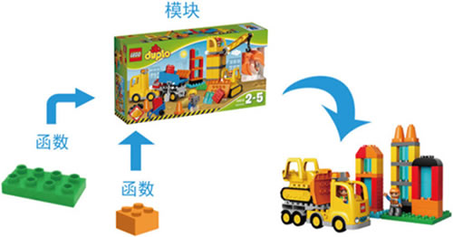
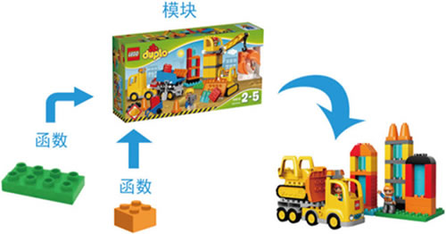

首页 > Python > Python模块和包
什么是模块，Python模块化编程（入门必读）
Python 提供了强大的模块支持，主要体现在，不仅 Python 标准库中包含了大量的模块（称为标准模块），还有大量的第三方模块，开发者自己也可以开发自定义模块。通过这些强大的模块可以极大地提高开发者的开发效率。
那么，模块到底指的是什么呢？模块，英文为 Modules，至于模块到底是什么，可以用一句话总结：模块就是 Python 程序。换句话说，任何 Python 程序都可以作为模块，包括在前面章节中写的所有 Python 程序，都可以作为模块。
模块可以比作一盒积木，通过它可以拼出多种主题的玩具，这与前面介绍的函数不同，一个函数仅相当于一块积木，而一个模块（.py 文件）中可以包含多个函数，也就是很多积木。模块和函数的关系如图 1 所示。

图 1 模块和函数的关系
经过前面的学习，读者已经能够将 Python 代码写到一个文件中，但随着程序功能的复杂，程序体积会不断变大，为了便于维护，通常会将其分为多个文件（模块），这样不仅可以提高代码的可维护性，还可以提高代码的可重用性。
前面讲了封装，并且还介绍了很多具有封装特性的结构，比如说：
举个简单的例子，在某一目录下（桌面也可以）创建一个名为 hello.py 文件，其包含的代码如下：
与此同时，当调用模块中的 say() 函数时，使用的语法格式为“模块名.函数”，这是因为，相对于 say.py 文件，hello.py 文件中的代码自成一个命名空间，因此在调用其他模块中的函数时，需要明确指明函数的出处，否则 Python 解释器将会报错。
那么，模块到底指的是什么呢？模块，英文为 Modules，至于模块到底是什么，可以用一句话总结：模块就是 Python 程序。换句话说，任何 Python 程序都可以作为模块，包括在前面章节中写的所有 Python 程序，都可以作为模块。
模块可以比作一盒积木，通过它可以拼出多种主题的玩具，这与前面介绍的函数不同，一个函数仅相当于一块积木，而一个模块（.py 文件）中可以包含多个函数，也就是很多积木。模块和函数的关系如图 1 所示。

图 1 模块和函数的关系
经过前面的学习，读者已经能够将 Python 代码写到一个文件中，但随着程序功能的复杂，程序体积会不断变大，为了便于维护，通常会将其分为多个文件（模块），这样不仅可以提高代码的可维护性，还可以提高代码的可重用性。
代码的可重用性体现在，当编写好一个模块后，只要编程过程中需要用到该模块中的某个功能（由变量、函数、类实现），无需做重复性的编写工作，直接在程序中导入该模块即可使用该功能。
前面讲了封装，并且还介绍了很多具有封装特性的结构，比如说：
- 诸多容器，例如列表、元组、字符串、字典等，它们都是对数据的封装；
- 函数是对 Python 代码的封装；
- 类是对方法和属性的封装，也可以说是对函数和数据的封装。
举个简单的例子，在某一目录下（桌面也可以）创建一个名为 hello.py 文件，其包含的代码如下：
def say ():
print("Hello,World!")
在同一目录下，再创建一个 say.py 文件，其包含的代码如下：
#通过 import 关键字，将 hello.py 模块引入此文件 import hello hello.say()运行 say.py 文件，其输出结果为：
Hello,World!
读者可能注意到，say.py 文件中使用了原本在 hello.py 文件中才有的 say() 函数，相对于 day.py 来说，hello.py 就是一个自定义的模块（有关自定义模块，后续章节会做详细讲解），我们只需要将 hellp.py 模块导入到 say.py 文件中，就可以直接在 say.py 文件中使用模块中的资源。与此同时，当调用模块中的 say() 函数时，使用的语法格式为“模块名.函数”，这是因为，相对于 say.py 文件，hello.py 文件中的代码自成一个命名空间，因此在调用其他模块中的函数时，需要明确指明函数的出处，否则 Python 解释器将会报错。
关注公众号「站长严长生」，在手机上阅读所有教程，随时随地都能学习。内含一款搜索神器，免费下载全网书籍和视频。

微信扫码关注公众号